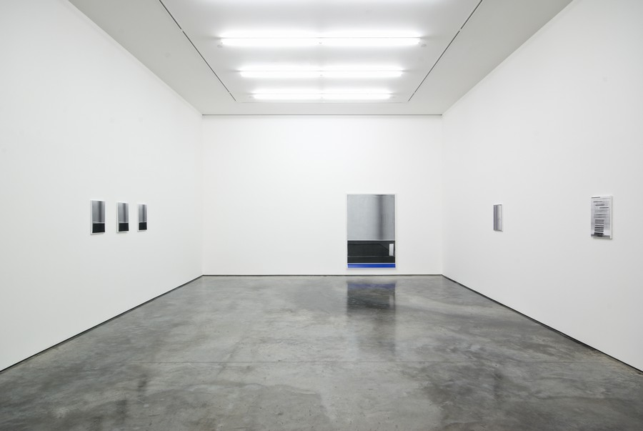

art and gallery spaces
spencer
iva
housekeeping
final change of schedule > the ad/venture exhibition will finish ten days earlier.
homework review
- what picture did you choose?
- what do you want to make around it?
ava, angelica and sammy
nails and threads (as concepts and materials)
map/subway/genealogy
how connected NYU is?
who did this?
hoya, ivory
death strip (wall of berlin)
- total super imposition (displaying pictures of past and future)
-locations of Berlin showing how arbitrary the wall was
- small exchanges between people on each side
jumana and shalini
separated image
smrithi sree
female sexuality / beautified vs. ordinary
x and y scroll
interactive and questioning audience
approval/disapproval
mar gilad
hands pictures
the hand wrote the text
add a sound to each of the texts/images
comments from models/visitors
the augmenting of space
when did we start augmenting spaces?
what is the difference between a space and a place?
ornaments on facades
modern-day ornament
a place has more dimensions
place is more closed / space is more open
space exists in and of itself, place exists more in a conceptual way
space is a thing, place is more (of an art?)
space is more temporary, place is more permanent
space is more open, ambiguous; place is more personal
space as a place
augmented spaces are the collapse of two different layers: physical (thing), and informational (data).
geographical
historical
emotional / personal
technologies of space augmentation
what makes a digitally augmented space different from previous modes of space augmentation?
technologies can augment spaces slightly differently (remote, fixed, personal).
`data is anything
taking and giving
binary vs. continuum
every constant becomes a variable
personalization and customization
the context
truly augmenting implies some sort of understanding of context.
context is the answer to these questions: where? who? when? why?
how many?
how was it made?
how is it supposed to be experienced?
for who?
with what?
why?
where was it? is it? will it be?
augmented reality against the rest
how is AR technology different from cameras/wifi/GPS?
customization
a single pair of eyes
the concept of augmentation
augmentation is the intertwining of multiple dimensions in a single device at a time, for a single, contextualized user.
augmentation doesn't have clear boundaries, it can happen anywhere.
belonging
what makes a piece of art belong somewhere?
(and what makes an art piece?)
the space of an art gallery
how is an art gallery different from a museum? what is it for?

the white cube
what is the purpose of the white cube?
art history has, at some point, converged towards essential superficiality.

it doesn't take away from what they're showing
white cube as a democratized space
/ egalitarian / sanitizing
individuality is to be avoided
we are all the same person
selling space
the spectator
data layer
art in a white cube
the picture > the installation
the canvas > the space
the Artist > the Spectator
ar apps in a white cube
augmenting as collapse of states vs. exhibiting as a removal of context
so what does it mean to augment a gallery space?
break
10'-15'
ar image anchors
an image anchor allows you to create a meaningul connection between the physical and the data worlds.
contrast and features
ar reference set
image 1
image 2
image 3
unity phyiscs - rigidbodies
by adding a RIGIDBODY component, you can enable physics:
falling, bouncing, resisting, friction
unity physics - colliders
colliders are invisible areas that detect when another collider touches them.
[COLLIDER] they can either resist the entering body...
unity physics - triggers
[TRIGGER] ...or let it go through and simply register the contact.
1 - collider set as trigger (space)
2 - collider (not set as trigger)
+ rigidbody (make sure to tick gravity off)
exercise
(1) create an invisible trigger...
(2) ...when the camera hits that trigger...
(3) ...make a game object fall to the ground